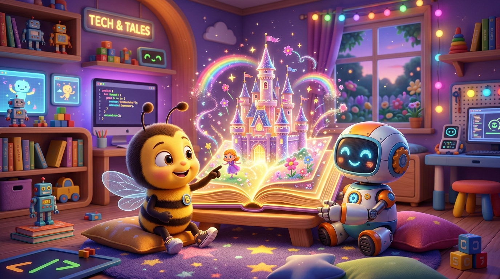

Buku Cerita Animasi Interaktif! 📖✨
Menggabungkan Karakter Hero AI, Suara Nyata Text-to-Speech, dan Tombol Pembalik Halaman menjadi E-Book Digital Pertama!

Lihat Seberapa Jauh Kita Melangkah! 🚀🌟
Dari bermain arah panah fisik di lantai, sekarang kita sudah bisa membuat film animasi bersuara:
Gerak & Panggung
Langkah panah presisi, memilih sprite lebah, dan perintah gerak 50 langkah.
Event & Kepakan Sayap
Event klik topi emas, efek suara Magic Spell, dan perulangan loop sayap otomatis.
Dialog & Suara Nyata
Sinkronisasi giliran bicara (wait block) dan suara AI Text-to-Speech Indonesia.
Hero AI & Buku Cerita
Merancang sprite hero dengan prompt AI dan menyatukannya jadi buku cerita utuh!
Tiga Bahan Rahasia Buku Cerita Ajaib 🪄📚
Sebuah buku cerita animasi interaktif membutuhkan 3 elemen kunci:
1. Tokoh Utama Hero
Sprite buatanmu sendiri dari generator AI (misal: Beeby astronot atau dino imut) sebagai tokoh utama yang berpetualang.
2. Percakapan Bersuara
Dialog ramah bersuara nyata AI Text-to-Speech yang saling bersahut-sahutan secara rapi tanpa berebutan bicara.
3. Tombol Pembalik Halaman
Sprite tombol panah yang ketika diklik pembaca, berpindah ke latar belakang berikutnya (Backdrop baru).
Koding Tombol Pembalik Halaman ⏩📖
Bagaimana cara berpindah dari Halaman 1 ke Halaman 2 saat tombol diklik?
Setiap tombol diklik, Scratch membunyikan efek suara kertas atau Pop dan mengganti latar panggung ke halaman berikutnya!
Karakter otomatis tahu ketika halaman berganti dan langsung membacakan dialog babak baru!
Misi Meraih 4 Bintang Emas! ⭐🏆
Periksa apakah buku cerita kodingmu sudah memiliki semua syarat ini:
Uji Coba Simulator Buku Cerita Ajaib 📖🔊
Klik tombol pembalik halaman dan dengarkan cerita bersuara secara langsung:
Resep 3 Babak Cerita yang Menarik 🎬
Bantu anak-anak menyusun cerita dongeng sederhana dengan alur 3 babak:
Babak 1: Perkenalan
Latar taman bunga cerah. Tokoh Beeby memperkenalkan dirinya dan impiannya mencari istana pelangi.
Babak 2: Bertemu Teman
Beeby bertemu sahabat baru (Robo). Mereka saling menyapa dan memutuskan menjelajah bersama!
Babak 3: Penutup Ceria
Mereka berhasil sampai di Istana Pelangi dan menari gembira bersama seluruh penonton!
Mengatasi 2 Bug Paling Sering Terjadi 🕵️♂️🔍
Periksa jika cerita dongeng digital anak mengalami kendala ini:
Karakter Nyasar di Halaman yang Salah!
Jika tokoh baru seharusnya hanya muncul di Halaman 2, sembunyikan saat di Halaman 1!
Suara Bertabrakan / Berbicara Bersamaan
Kedua karakter bicara berbarengan sehingga suaranya tidak terdengar jelas!
wait 3 secs sebelum berbicara!
Waktunya Memoles Karya Impianmu! 🎨💻
Instruktur akan mendampingi setiap siswa merapikan detail proyeknya:
Checklist Terakhir Sebelum Showcase:
- ✔ Apakah nama proyek sudah diganti jadi judul ceritamu?
- ✔ Apakah tombol pembalik halaman berfungsi saat diklik?
- ✔ Apakah semua karakter berbicara bahasa Indonesia dengan lancar?
- ⭐ Klik tombol Share (Bagikan) agar karyamu bisa dilihat dunia!
Penganugerahan Badge Resmi
Siswa yang berhasil menyelesaikan Mini Proyek 1 hari ini berhak mendapatkan badge kompetensi "Junior Digital Storyteller"!
Panggung Cerita Cilik & Tepuk Koding! 👏🎉
Selamat! Kamu berhasil menuntaskan 8 sesi pertama dengan karya dongeng yang luar biasa!
🌟 Festival Pameran Dongeng Digital:
1. Siswa membacakan judul dan mendemokan e-book kodingnya.
2. Seluruh teman sekelas menyimak dan memberikan tepuk tangan.
3. Guru menyerahkan piagam digital mini proyek pertama!
🐝 Petualangan Baru Menanti (Sesi 09):
Kita akan memasuki dunia game petualangan! Beeby harus dipandu tombol panah melewati tembok labirin tanpa menabrak!